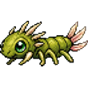

 Light
LightTap a stage to read its story.
Nymphid is a bright green caterpillar-like larva with a row of pink feathery gills fanning from its sides and enormous green eyes that take up most of its face. It crawls through the Crystal Mines' lower galleries, pausing to press its face against glowing crystal faces and absorb whatever light seeps through. The gills flutter rapidly when it is excited, which is most of the time - Crystal Mines offers more colors of light than anything it has encountered, and it is cataloguing each one.
Field note: Nymphid's gills change color depending on which wavelength of crystal-light it absorbed most recently.
Crystal Mines. Nymphid and its family are found in the Crystal Mines. See everyone who lives there.
Share a Bond Food that matches its types to become friends. Nymphid loves:
A Bond Food is not a trick. It joins your spirit with the Kimuro's spirit, and only when it chooses you.
Print the Kimuro adventure packs: mazes, cards, a board game and Bond Mark medals.
See the printable packs